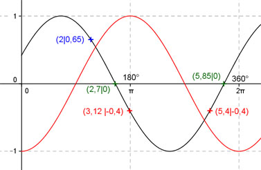

Aufgabe 204
Ergänzen Sie die Wertetabelle für x zwischen 0 und 2π:
y = -cos (x + 2)
x 2 3,12 oder 5,4
y 0,65 -0,4
Amplitude = 1 ; Periode = 2π ;
Phasenverschiebung (siehe unten) = 2 oder 114,6° bedeutet,
-cos x ist um 2 oder 114,6° nach links verschoben.
Berechnung der Nullstellen:
-cos (x + 2) = 0 -->
Substitution (x + 2) = u -->
-cos u = 0 -->
u = π/2 + k * π mit k = 1, 2, ... -->
Rücksubstitution liefert
x + 2 = π/2 + k * π |-2 -->
x = π/2 + k * π - 2
x1 = π/2 + π - 2 = 2,7 oder 154,7° gerundet
x2 = π/2 + 2π - 2 = 5,85 oder 335,2° gerundet.

Funktionswert an einer Stelle x ermitteln:
2 * 180°
x = 2 oder ---------- = 114,6°
π
f(2) = - cos (2 + 2) = -cos (114,6° + 114,6°) = 0,65 gerundet.
Berechnung der x-Werte für y = f(x) = -0,4:
f((x)) = -0,4 eingesetzt, existiert für -cos x
zwischen 0 und π bzw. 0° und 180° und zwischen
π und 2π bzw. zwischen 180° und 360°.
-cos x = -0,4 |*(-1) -->
cos x = 0,4 -->
x = arc cos 0,4 = 1,16 -->
x1 = (2π - 1,16) = 5,12 oder, wegen Periode 2π,
x2 = (2π + 1,16) = 7,44 gerundet.
(siehe Einheitskreis)
 Unter Berücksichtigung der Phasenverschiebung:
3,12 * 180°
x1 = (5,12 - 2) = 3,12 oder ------------- = 178,8°
π
x2 = (7,44 - 2) = 5,44 (5,4 gerundet) oder 311,7°
Unter Berücksichtigung der Phasenverschiebung:
3,12 * 180°
x1 = (5,12 - 2) = 3,12 oder ------------- = 178,8°
π
x2 = (7,44 - 2) = 5,44 (5,4 gerundet) oder 311,7°